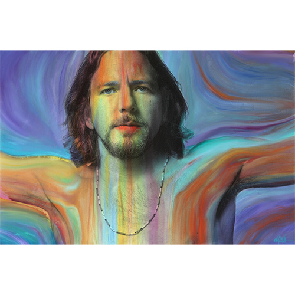
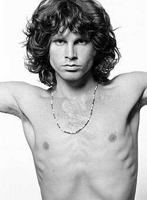

Notes
This work references Eddie Vedder and Jim Morrison.
This composition was later adapted by the artist as a limited-edition print in the Vinyl Chord: A Revolutionary Record Store series.
Ancillary Documentation


Selected Online Circulation
Selected examples of the work’s online circulation, reproduction, or discussion. This list is not exhaustive; it is intended to document representative appearances of the image beyond formal exhibition and publication records.